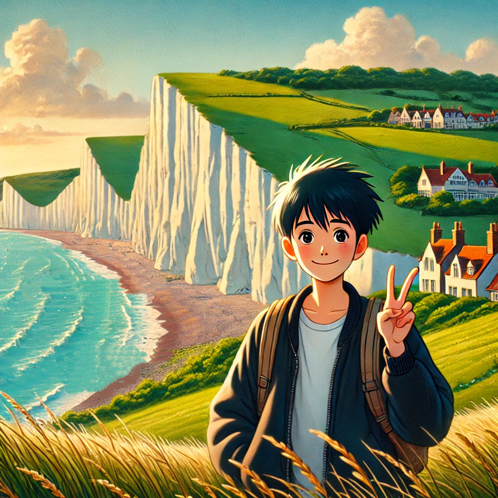

|
Tianyu Sun Ph.D. student S-Lab, College of Computing and Data Science, Nanyang Technological University. Google Scholar / Twitter / Github I'm interested in computer vision, deep learning, generative AI, and image processing. Most of my research is about inferring the physical world (shape, motion, color, light, etc) from images, usually with radiance fields. Some papers are highlighted. |
 |
{kind=link}
ResearchI'm interested in computer vision, deep learning, generative AI, and image processing. Most of my research is about inferring the physical world (shape, motion, color, light, etc) from images, usually with radiance fields. Some papers are highlighted. |

|
Generative Multiview Relighting for
3D Reconstruction under Extreme Illumination Variation
Hadi Alzayer, Philipp Henzler, Jonathan T. Barron, Jia-Bin Huang, Pratul P. Srinivasan, Dor Verbin arXiv, 2024 project page / arXiv Images taken under extreme illumination variation can be made consistent with diffusion, and this enables high-quality 3D reconstruction. |

|
SimVS: Simulating World Inconsistencies for Robust View Synthesis
Alex Trevithick, Roni Paiss, Philipp Henzler, Dor Verbin, Rundi Wu, Hadi Alzayer, Ruiqi Gao, Ben Poole, Jonathan T. Barron, Aleksander Holynski, Ravi Ramamoorthi, Pratul P. Srinivasan arXiv, 2024 project page / arXiv Simulating the world with video models lets you make inconsistent captures consistent. |
Professional ServicesI'm interested in computer vision, deep learning, generative AI, and image processing. Most of my research is about inferring the physical world (shape, motion, color, light, etc) from images, usually with radiance fields. Some papers are highlighted. |
TeachingI'm interested in computer vision, deep learning, generative AI, and image processing. Most of my research is about inferring the physical world (shape, motion, color, light, etc) from images, usually with radiance fields. Some papers are highlighted. |
|
This homepage is heavily built on the source code of homepage of Jon Barron. |